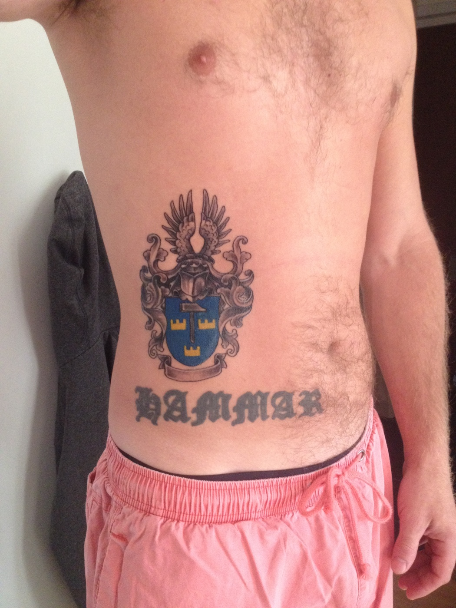
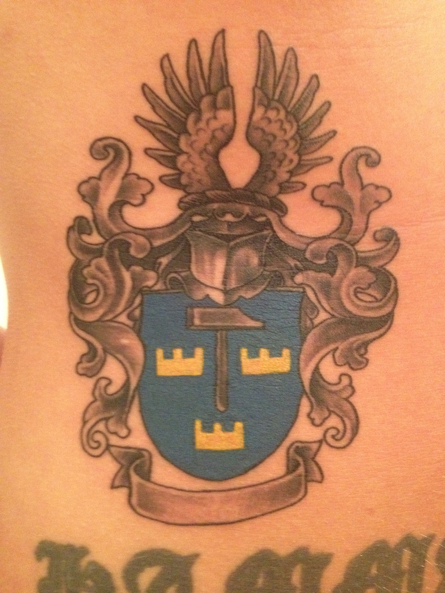

Tatuera in släktvapnet?
Jim Hammar har valt att tatuera in det Hammarska släktvapnet. Detta skedde i Thailand till en kostnad av ca 2 000 SEK för den som är sugen på att göra detsamma. Det skall ha gjort rejält ont - men skall ha varit väl värt besväret.
Jim är alltså son till Clarence, som i sin tur är son till John. Jim tillhör alltså första grenen.
Jim har nyligen fått en son som heter Hugo som är den förstfödde i sjunde generationen, räknat från Otto och Hanna Jansson, plåtslagarfamiljen från Göteborg som innehade CM Hammar.
Jim är rörmokare till vardags och är verksam på Vendelsö.
Tack för bilder och info Jim!

